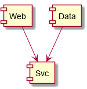

Being a Journal of my Java Web-App Development Journey
Table of Contents
-
<<<<<<< HEAD
- 1. Overview
- 2. Java
- 2.1. On a Mac
- 2.2. Java EE =======
- 1. Overview
- 2. Java
- 2.1. On a Mac
- 2.2. Java EE >>>>>>> split-injected-bean-interface-and-implementation <<<<<<< HEAD
- 2.3. Editing in emacs
- 3. Tomcat
- 3.1. On a Mac
- 3.2. On Ubuntu Linux 16.04
- 3.3. Deploy code
- 3.4. DONE JDBC connection and other external configs preserved between version upgrade
- 3.4.1. DONE Move
Resourcefromserver.xmltocontext.xml - 3.4.2. Cleanups, now that we got it working
- 3. Tomcat
- 3.1. On a Mac
- 3.2. On Ubuntu Linux 16.04
- 3.3. Deploy code
- 3.4. DONE JDBC connection and other external configs preserved between version upgrade
- 3.4.1. DONE Move
Resourcefromserver.xmltocontext.xml - 3.4.2. Cleanups, now that we got it working
- 3.4.2.1. Put the sqlite driver in
${CATALINA_BASE}/lib - 3.4.2.2. Note on Context vs. GlobalNamingResources >>>>>>> split-injected-bean-interface-and-implementation
- 3.4.2.3. Resource injection
- 3.4.2.1. Put the sqlite driver in
- 3.4.1. DONE Move
<<<<<<< HEAD
- 4. Database
- 5. JavaEE
- 6. JS Framework
- 7. Build system
- 7.1. Gradle
- 7.2. RESEARCH-DONE Maven
- 7.2.1. Install/update
- 7.2.2. RESEARCH-DONE Make a project
- 7.2.3. Reactor? What's that?
- 7.2.4. Useful sites =======
- 4. Database
- 5. JavaEE
- 6. JS Framework
- 7. Build system
- 7.1. Gradle
- 7.2. RESEARCH-DONE Maven
- 7.2.1. Install/update
- 7.2.2. RESEARCH-DONE Make a project
- 7.2.3. Reactor? What's that?
- 7.2.4. Useful sites >>>>>>> split-injected-bean-interface-and-implementation
<<<<<<< HEAD
- 8. App code
- 8.1. Simplest possible code
- 8.2. Other aspects to consider
- 8.2.1. Packaging – how the entire project is structured
- 8.2.2. Servlet Routing
- 8.2.3. JSON output
- 8.2.4. DONE Dependency Injection
- 8.2.4.1. Setup
- 8.2.4.1.1. DONE Creating injected beans in another module
- 8.2.4.1.1.1. RESEARCH-DONE Bean scoping
- 8.2.4.1.1.2. HOLD
beans.xmlis optional, supposedly
=======
- 8. App code
- 8.1. Simplest possible code
- 8.2. Other aspects to consider
- 8.2.1. Packaging – how the entire project is structured
- 8.2.2. Servlet Routing
- 8.2.3. JSON output
- 8.2.4. DONE Dependency Injection
- 8.2.4.1. Setup
- 8.2.4.1.1. DONE Creating injected beans in another module
- 8.2.4.1.1.1. RESEARCH-DONE Bean scoping
- 8.2.4.1.1.2. TODO
beans.xmlis optional, supposedly
>>>>>>> split-injected-bean-interface-and-implementation
<<<<<<< HEAD
- 8.2.4.1.1. DONE Creating injected beans in another module
- 8.2.4.2. Background info
- 8.2.4.1. Setup
- 8.2.5. DONE Persistence
- 8.2.5.1. DONE SQLite (for now)
- 8.2.5.1.1. DONE Create a play sqlite database
- 8.2.5.1.1.1. DONE Where to put it?
- 8.2.5. DONE Persistence
- 8.2.5.1. DONE SQLite (for now)
- 8.2.5.1.1. DONE Create a play sqlite database
- 8.2.5.1.1.1. DONE Where to put it?
- 8.2.5.1.1.1.1. DONE jar properties >>>>>>> split-injected-bean-interface-and-implementation
- 8.2.5.1.1.1.2. DONE Command-line (or otherwise run-time) properties
- 8.2.5.1.1.1. DONE Where to put it?
<<<<<<< HEAD
- 8.2.5.1.1. DONE Create a play sqlite database
- 8.2.5.2. Connect to SQLite d/b using JDBC
- 8.2.5.3. TODO Java Persistence API (JPA)
- 8.2.5.3.1. "Criteria" queries: Yikes.
- 8.2.5.3.2. DONE JPQL
- 8.2.5.3.2.1. TODO fetch plans
- 8.2.5.3.2.2. IN-PROGRESS EclipseLink
- 8.2.5.3.2.2.1. Add EclipseLink to build/deploy
- 8.2.5.3.2.2.2. Use EclipseLink in code
- 8.2.5.3.2.2.3. Download & install =======
- 8.2.5.2. Connect to SQLite d/b using JDBC
- 8.2.5.3. TODO Java Persistence API (JPA)
- 8.2.5.3.1. "Criteria" queries: Yikes.
- 8.2.5.3.2. DONE JPQL
- 8.2.5.3.2.1. TODO fetch plans
- 8.2.5.3.2.2. TODO EclipseLink
- 8.2.5.3.2.2.1. Download & install >>>>>>> split-injected-bean-interface-and-implementation
<<<<<<< HEAD
- 8.2.6. DONE Lombok
- 8.2.7. Logging & Telemetry
- 8.2.8. Security & Griefing
- 8.2.9. Documentation generation
- 8.2.10. Automated testing
- 8.2.11. Code coverage during [automated] testing
- 8.2.12. Command pattern, undo/redo trees
- 8.2.13. Well-known APIs
- 8.2.14. Data export/import
- 8.2.15. Stress testing, esp. for database
- 8.2.16. SQL profiling, tracing
- 8.2.17. TODO Object mappers (Domain/DTO)
- 8.2.17.1. TODO Is this required when using JPQL?
- 8.2.17.2. TODO Is this required when using Criteria? =======
- 8.2.6. DONE Lombok
- 8.2.7. Logging & Telemetry
- 8.2.8. Security & Griefing
- 8.2.9. Documentation generation
- 8.2.10. Automated testing
- 8.2.11. Code coverage during [automated] testing
- 8.2.12. Command pattern, undo/redo trees
- 8.2.13. Well-known APIs
- 8.2.14. Data export/import
- 8.2.15. Stress testing, esp. for database
- 8.2.16. SQL profiling, tracing
- 8.2.17. TODO Object mappers (Domain/DTO)
- 8.2.17.1. TODO Is this required when using JPQL?
- 8.2.17.2. TODO Is this required when using Criteria? >>>>>>> split-injected-bean-interface-and-implementation
<<<<<<< HEAD
- 9. Operations
- 9.1. Deploying
- 9.2. Diagnosing Deploy-Time Errors
- 9.2.1. Injection failures
- 9.2.1.1. RESEARCH-DONE Unsatisfied dependencies
- 9.2.1.2. DONE Ambiguous dependencies
- 9.2.1.2.1. On annotations =======
- 9. Operations
- 9.1. Deploying
- 9.2. Diagnosing Deploy-Time Errors
- 9.2.1. Injection failures
- 9.2.1.1. RESEARCH-IN-PROGRESS Unsatisfied dependencies
- 9.2.1.2. DONE Ambiguous dependencies
- 9.2.1.2.1. On annotations >>>>>>> split-injected-bean-interface-and-implementation
<<<<<<< HEAD
- 9.2.2. DONE D/B connection problems (JNDI problem)
- 9.2.2.1. DONE Direct JDBC connection =======
- 9.2.2. DONE D/B connection problems (JNDI problem)
- 9.2.2.1. DONE Direct JDBC connection >>>>>>> split-injected-bean-interface-and-implementation
- 9.2.2.2. RESEARCH-DONE
web.xmlstructure
<<<<<<< HEAD
- 9.3. DONE Debugging =======
- 9.3. DONE Debugging >>>>>>> split-injected-bean-interface-and-implementation
- 9.2.1. Injection failures
- 9.2.1. Injection failures
- 8.2.5.1. DONE SQLite (for now)
- 8.2.5.1.1. DONE Create a play sqlite database
- 8.2.5.1. DONE SQLite (for now)
- 8.2.4.1.1. DONE Creating injected beans in another module
- 8.2.4.1. Setup
- 3.4.1. DONE Move
1 Overview
=======1 Overview
>>>>>>> split-injected-bean-interface-and-implementationI'm going to keep a diary of my effort to develop a web app from soup to nuts. This is an emacs org-mode file that's part "living document" and part journal. I skip around a bit in writing it because this part goes with that part, but it's also a bit chronological as you get into various sections and I'm problem-solving.
A very long time ago (15 years??), I was a semi-competent Java web-app programmer, and I'd like to get back to that. I've spent enough time in the Microsoft world, which has a different character1, and I miss the Java world.
My background is Java from the 90s (yes, it's that old) and early 2000s. I worked for a startup that made a web app in the days before "Web 2.0", and we were poor and crude. (We did survive the dot-com crash in some form, though.) No JS framework (apart from the absolutely horrible one we came up with on our own – don't do that). No persistence layer apart from direct JDBC calls (even though TopLink was available, as were others such as Cayenne and Hibernate). We used Apache and Tomcat and JBoss on Windows NT. No Spring. No Nginx. No Jetty. (I still don't know Spring; I might make it part of this project later.) Lots of Unix experience (Perl, bash, awk, make, and friends) from before that.
The initial plans for this project are in README.org. (At https://github.com/JohnL4/LayLeadership.)
1.1 More emo blather about "why Java"
=======1.1 More emo blather about "why Java"
>>>>>>> split-injected-bean-interface-and-implementation(You can skip this; it's information-free.)
Some people will ask "Why Java? Why not Node or Ruby [do people still say that?] or Kotlin or Go or serverless or C# [seriously?2] or Blazor or <superior framework I haven't heard of yet>? Java EE is h-a-a-a-a-r-r-r-d [Barbie voice]."
Because:
- My roots.
- Performance: Java is pretty zippy.
- Strong, static typing for the win.
- Universality. COBOL of the 90s, if you know what I mean.
- Really good enterprise structuring. When my little side project grows up to be the 800-lb gorilla of church software, I'll be glad its foundations are solid.
- Less magic, if you stay away from all the stuff "smart" IDEs (like Eclipse) can do for/to you. Some languages are pretty tightly bound to their IDEs. You know who I'm talking about. [squinty eyes]
- Related to the "enterprise" point: I really want the skill of being able to whip out, quickly, a well-structured web-app solution for whatever situation. For example, one of the things I've seen recently with various social-activism groups is a call for "web development". Wouldn't it be spiffy to pretty much immediately plunk down a complete, well-formed solution?
1.2 A note on horrible colors in source code
=======1.2 A note on horrible colors in source code
>>>>>>> split-injected-bean-interface-and-implementation
Sometimes, I generate this file running emacs in character mode via an ssh terminal session.
In that case, I use colors appropriate to "dark mode" and they come out looking horrible. Sorry
about that. Hopefully, you're reading this after I've generated it via light-mode GUI and emacs
is using different colors.
2 Java
=======2 Java
>>>>>>> split-injected-bean-interface-and-implementationCurrently running my wiki on JSPWiki on Tomcat 8 on Java 8. I'd like to run a different process on Java whatever-is-the-latest. (Note: see the Jakarta/Java version question.)
Looks like some process has kept Java up to date on my AWS server. Yay. Also, apparently, openjdk is legal to use. Yay.
https://adoptopenjdk.net/index.html has the builds for download.
https://docs.oracle.com/en/java/javase/11/ has tool documentation (javac, java, etc.). I
haven't yet found these docs in any downloaded packages.
2.1 On a Mac
=======2.1 On a Mac
>>>>>>> split-injected-bean-interface-and-implementation
On a Mac, the OpenJDK 8 installer puts files in
/Library/Java/JavaVirtualMachines/adoptopenjdk-8.jdk/Contents/Home/bin, but I can't seem to
symlink them in to /usr/bin.
2.2 Java EE
=======2.2 Java EE
>>>>>>> split-injected-bean-interface-and-implementationWell, first off, a lot has happened in the Java world since I left it, around 2005 or so. (Pshew, was it really that long ago? Oy.)
Java EE has become Jakarta EE, and is now managed by the Eclipse Foundation. It appears that, as of , Java EE 8 is the download (from Oracle), but, in future, I guess we'll be getting new versions from https://jakarta.ee/.
2.2.1 Question: Does Jakarta EE support any version of Java >= 8? Answer: apparently not. :(
Based on this quote: "We also have to move the APIs to support JDK 11." from this article: https://dzone.com/articles/jakarta-ee-8-and-beyond.
(Note: the jars probably still run just fine on higher versions of Java, I guess they just don't take advantage of the latest features of the language. I kinda don't care, so long as they run properly.)
2.3 Editing in emacs
=======2.3 Editing in emacs
>>>>>>> split-injected-bean-interface-and-implementationThis might be a lost cause, but if you want to get away from magic tools like IntelliJ, Eclipse, VS Code, …
https://www.emacswiki.org/emacs/JavaDevelopmentEnvironment
https://blog.jmibanez.com/2019/03/31/emacs-as-java-ide-revisited.html
3 Tomcat
3.1 On a Mac
=======3 Tomcat
3.1 On a Mac
>>>>>>> split-injected-bean-interface-and-implementation
Unzipped Tomcat 9 to /opt.
Created user tomcat using Mac "Users and Groups" control panel applet. Disabled login by
tomcat with the following shell command:
sudo chpass -s /usr/bin/false tomcat
chown'd the resulting directory (recursively) to user tomcat.
Created a simple start-tomcat (and analogous stop-tomcat) script in
/opt/apache-tomcat-9.0.31/bin directory:
#!/bin/bash export CATALINA_HOME=/opt/apache-tomcat-9.0.31 # export CATALINA_BASE=~/Tomcat/apache-tomcat-9.0 export JAVA_HOME=/Library/Java/JavaVirtualMachines/adoptopenjdk-8.jdk/Contents/Home exec su -m tomcat ${CATALINA_HOME}/bin/catalina.sh start
Edited /opt/apache-tomcat-9.0.31/conf/tomcat-users.xml to add users for manager-gui, admin-gui
and (separate user) manager-script, admin-script.
Running on AdoptOpenJDK 11 is as easy as downloading and installing it and changing the above
JAVA_HOME to point to the new JDK. It seems to run without problem.
It should also be possible to install it via homebrew, which might then keep it up to date better than a manual install process would.
For homebrew, you'll need to open a "tap" (i.e., add another repository), and then install the "cask" for the jdk you want. See the instructions at the adoptopenjdk.
3.2 On Ubuntu Linux 16.04
=======3.2 On Ubuntu Linux 16.04
>>>>>>> split-injected-bean-interface-and-implementation3.3 Deploy code
=======3.3 Deploy code
>>>>>>> split-injected-bean-interface-and-implementationWell, first you have to write some code. See Simplest possible code.
3.4 DONE JDBC connection and other external configs preserved between version upgrade
See
https://serverfault.com/a/751477Note: the advice to put the config inserver.xmlis basically wrong. Instead, follow the instructions at https://tomcat.apache.org/tomcat-9.0-doc/jndi-resources-howto.html#JDBC_Data_Sources, and put it incontext.xml.- https://newfivefour.com/category_sqlite.html
From /opt/apache-tomcat-9.0.31/conf/server.xml:
<!-- Global JNDI resources
Documentation at /docs/jndi-resources-howto.html
-->
…which is https://tomcat.apache.org/tomcat-9.0-doc/jndi-resources-howto.html
(https://tomcat.apache.org/tomcat-9.0-doc/jndi-datasource-examples-howto.html might also be interesting.)
So, rather than learn all of JNDI, I think all you need to know is that it's essentially a directory of resources available for lookup by code in your app. Said directory can be served by a local server (e.g., your Tomcat instance creating an ersatz read-only version out of whole cloth) or it could be served by another server and magically looked up. Said other server could be a JNDI server, an LDAP server or a Microsoft Active Directory server; we sort of don't care because it should be transparent to our code. More or less.
We're doing the ersatz-out-of-whole-cloth version here.
SQLite driverClassName |
org.sqlite.JDBC (at least, that's what we'll try) |
| SQLite connection url | jdbc:sqlite:/usr/local/var/LayLeadership/tasks.db |
So, we'll try this, in /opt/apache-tomcat-9.0.31/conf/server.xml:
<GlobalNamingResources> <!-- ...stuff... --> <Resource name="jdbc/LayLeadershipTasks" auth="Container" type="javax.sql.DataSource" driverClassName="org.sqlite.JDBC" url="jdbc:sqlite:/usr/local/var/LayLeadership/tasks.db" /> <!-- ...stuff... --> </GlobalNamingResources>
This will probably require deploying the SQLite jar(s) to the server's libs, since this definition is at the server global level.
This is how I did that:
deimos# pwd /opt/apache-tomcat-9.0.31/lib deimos# cp ~/.m2/repository/org/xerial/sqlite-jdbc/3.30.1/sqlite-jdbc-3.30.1.jar .
(So I deployed exactly what I'm building with.)
3.4.1 DONE Move Resource from server.xml to context.xml
=======
3.4.1 DONE Move Resource from server.xml to context.xml
>>>>>>> split-injected-bean-interface-and-implementation
It turns out (for whatever reason), putting this in server.xml GlobalNamingResources is not
the answer. Instead, it should go into META-INF/context.xml, in a Context element, per
https://tomcat.apache.org/tomcat-9.0-doc/jndi-resources-howto.html#JDBC_Data_Sources.
3.4.2 Cleanups, now that we got it working
=======3.4.2 Cleanups, now that we got it working
>>>>>>> split-injected-bean-interface-and-implementation
After moving the JNDI entry definition to context.xml, we got it working, but with code like
the following in our SQL repository:
// Guessing it's ok to hold on to the DataSource for a long time. var initialContext = new InitialContext( ); _dataSource = (DataSource) initialContext.lookup( "java:comp/env/" + DATABASE_JNDI_NAME);
So, (a) it'd be nice if we could inject the DataSource rather than create it ourselves, and (b) there are possible glitches called out in https://tomcat.apache.org/tomcat-9.0-doc/jndi-datasource-examples-howto.html.
3.4.2.1 Put the sqlite driver in ${CATALINA_BASE}/lib
=======
3.4.2.1 Put the sqlite driver in ${CATALINA_BASE}/lib
>>>>>>> split-injected-bean-interface-and-implementation
Basically, at the top/system level for the entire Tomcat web server.
3.4.2.2 Note on Context vs. GlobalNamingResources
=======3.4.2.2 Note on Context vs. GlobalNamingResources
>>>>>>> split-injected-bean-interface-and-implementationtl;dr: It should have worked.
3.4.2.3 Resource injection
@ApplicationScoped public class LayLeadershipSqliteRepository implements LayLeadershipRepository { private static final String DATABASE_JNDI_NAME = "jdbc/LayLeadership"; @Resource( name = DATABASE_JNDI_NAME) // Automatically prefixes "java:comp/env" onto this resource. SUPPOSEDLY, you can use 'lookup =' to give a complete path. private DataSource _dataSource;
There are a couple of things going on here (I think):
We put
@ApplicationScopedon the bean to make sure the container knows it's a managed bean ("managed" by CDI). I don't think the exact scope matters, so long as there's a CDI scope attribute so the container knows it's managed. We do this because resource injection only happens on managed objects.(Note that we might need to do this anyway if we're going to move the "Repository" interface back to another Maven module, like the
Svcmodule.)We put a
@Resourceattribute on the thing we want injected from the JNDI directory. Since we used thenameargument, we automatically get shunted off tojava:comp/env.Internet rumor has it that you can use
resourceto specify an entirely different path in the JNDI directory.I noticed (by accident) that if you get the name of the resource wrong, you get a big, nasty error in the web app itself (like… a faceful of stack trace), which is good. At least you know the lookup is being attempted. If you put in an intentionally wrong resource name and get no errors, you know the lookup isn't being attempted at all. For what that's worth.
4 Database
4.1 Consider an ORM of some sort
=======4 Database
4.1 Consider an ORM of some sort
>>>>>>> split-injected-bean-interface-and-implementationThis might require using a "more real" database than Sqlite. Although it might be fun to try. :)
https://www.eversql.com/i-followed-hibernate-orm-to-hell-and-came-back-alive-to-tell-about-it/
https://hackr.io/blog/java-frameworks – Hibernate's in here, along with a ton of other frameworks. Sounds like a good page to refer back to.
EclipseLink is the reference implementation for JPA.
4.2 SQLite
=======4.2 SQLite
>>>>>>> split-injected-bean-interface-and-implementation <<<<<<< HEAD4.2.1 Simple command-line use
=======4.2.1 Simple command-line use
>>>>>>> split-injected-bean-interface-and-implementationsqlite3 <database-file>
(Database files will probably have a suffix like .sqlite or .db.)
.mode columns -- Normal format is "|"-delimited, which is great for awk .headers on -- Column headers select * from Member; -- Don't forget the semicolon .quit
4.2.2 How much does it scale?
=======4.2.2 How much does it scale?
>>>>>>> split-injected-bean-interface-and-implementationFor a toy app (on a toy server), I don't need much.
But… it looks like it scales quite well, actually.
https://blog.expensify.com/2018/01/08/scaling-sqlite-to-4m-qps-on-a-single-server/
https://stackoverflow.com/a/62220
4.3 Postgresql
=======4.3 Postgresql
>>>>>>> split-injected-bean-interface-and-implementationWell, after all the Sqlite awesomeness, maybe I'll put this bad boy off a while more. I don't really intend to become a d/b geek.
4.4 Apache Derby
=======4.4 Apache Derby
>>>>>>> split-injected-bean-interface-and-implementationPure Java embedded database, but probably not as widely used as Sqlite. Advantage: probably works well with Hibernate and other Java technologies. Derby seems to perform better.
As if I care, with my 12-record database.
5 JavaEE
=======5 JavaEE
>>>>>>> split-injected-bean-interface-and-implementationI feel like there's a license restriction on the EE libs from Oracle. So I need to find an implementation I can use.
Turns out…
The Apache Tomcat software is an open source implementation of the Java Servlet, JavaServer Pages, Java Expression Language and Java WebSocket technologies. The Java Servlet, JavaServer Pages, Java Expression Language and Java WebSocket specifications are developed under the Java Community Process.
(From https://tomcat.apache.org/, right at the top.)
This at least satisfies the compiler:
javac -cp /opt/apache-tomcat-9.0.31/lib/servlet-api.jar com/how_hard_can_it_be/play/Main.java
Where the code looks like this:
package com.how_hard_can_it_be.play; import java.nio.file.Paths; import javax.servlet.http.HttpServlet; public class Main { public static void main( String[] args) { System.out.println( "Hello!"); var path = Paths.get("./test-data.txt"); System.out.println( String.format( "Path: %s", path.normalize().toAbsolutePath())); } private void handleServlet( HttpServlet aServlet) { } }
5.1 Dependencies
=======5.1 Dependencies
>>>>>>> split-injected-bean-interface-and-implementationI think you can also add them via Maven (from https://mvnrepository.com/artifact/javax.servlet/javax.servlet-api/4.0.1):
See How to make javax.servlet dependencies available, below.
5.2 JavaEE (JakartaEE) specs
=======5.2 JavaEE (JakartaEE) specs
>>>>>>> split-injected-bean-interface-and-implementationJavaEE is a big umbrella. Here's a table listing all the subparts and versions:
https://javaee.github.io/javaee-spec/Specifications
or
5.3 JavaEE tutorial
=======5.3 JavaEE tutorial
>>>>>>> split-injected-bean-interface-and-implementationVersion 8: https://javaee.github.io/tutorial/
This thing is monstrous. Also, this "tutorial" isn't very gentle; it's more like a reference (I like that).
6 JS Framework
7 Build system
7.1 Gradle
=======6 JS Framework
7 Build system
7.1 Gradle
>>>>>>> split-injected-bean-interface-and-implementationGradle is not the clean, well-documented system I had hoped for. Maybe if this turns into a big, giant project, it might pay off, but there seems to be a ton of black magic documented in example code and (probably) StackOverflow answers, so… maybe just use Maven.
7.2 RESEARCH-DONE Maven
Back to Maven, until I give up on it again.
Need to figure out how to download dependencies over https.
Answer: switch the urls to be "https" instead of "http". Also, purge your local .m2 repository
and let it get repopulated. Before I figured this out, I wrote a bunch of notes on "oddities" of
Maven. Turns out I had an ancient .m2 repository with a bunch of old Maven poms (or whatever)
in it from older Java days and before the transition to HTTPS (from HTTP) for Maven Central, and
so and so forth. Taking off and nuking the .m2 repository from orbit turned out to be the
solution. (Hopefully, my old/ancient projects will still build, but… eh. Problem for another
day.)
Need to figure out a project structure. Somewhere between simple-weapp and J2EE-webapp.
7.2.1 Install/update
=======7.2.1 Install/update
>>>>>>> split-injected-bean-interface-and-implementationUpdate maven, configure PATH. (Is that really all I have to do?) On a Mac.
Ok, so, I just downloaded the zip from Apache, unzipped it into /opt and symlinked the three
executable files in the bin directory to /usr/local/bin, which is already on the path.
7.2.2 RESEARCH-DONE Make a project
After much reading of Maven docs (finally), I think something like the J2EE project structure
(below, but you probably don't need to go read it) is the way to go. All I ever built in the
past was a single Maven project, but a project (parent or aggregate, packaging = pom) that has
the following sub-projects shouldn't be too hard.
- business logic, with minimal dependencies (onion architecture core, (https://jeffreypalermo.com/2008/07/the-onion-architecture-part-2/ (the other parts are good, too)))
- utilities I will probably use in other projects (again, minimal dependencies, and particularly no dependencies on UI or d/b layers). Maybe this is where I'd put interface/facade code for common stuff like logging.
- the actual web stuff, which would probably be a pretty thin layer around the business logic. One exception to the "thin layer" concept is that I guess this is where I'd stick all my super-fancy javascript UI stuff. The server would probably concentrate on returning JSON responses to RESTful (?) queries.
Wonder if I can create these as completely independent of each other (i.e., in different directories, not subdirectories) and then tie them all together with the parent POM. See https://maven.apache.org/pom.html#Aggregation. Answer: yes. (But I'm not doing it right away.)
Basically: (1) create a parent project (once), cd into the parent project directory, and (2) create sub-projects, Archetypes to be used:
- maven-archetype-quickstart (parent and jar-type subs)
- maven-archetype-webapp (probably just need one of these)
(Note: there might be some scary warnings at the beginning about HTTPS being required, but it works ok for setting up the initial project. In my case, they came from my old
.m2repository, and when I blew it away, the errors cleared up (because new versions got downloaded).)
Then, change the packaging of the parent project to pom, add the subprojects, etc., etc., as
documented at
https://maven.apache.org/guides/getting-started/index.html#How_do_I_build_more_than_one_project_at_once.
This works. The trick is to run mvn install at the root (parent) level, so
all depdendent projects plus the parent POM get installed to the local repository (~/.m2 by
default). Apparently, that parent POM is important.
7.2.2.1 Effective POM
=======7.2.2.1 Effective POM
>>>>>>> split-injected-bean-interface-and-implementationmvn help:effective-pom
Shows super-POM merged w/your POM (or inherited POM hierarchy, if you are so bold).
7.2.2.2 Patching up generated POMs
=======7.2.2.2 Patching up generated POMs
>>>>>>> split-injected-bean-interface-and-implementationLooks like Maven generates POMs that need a little more detail. (Or sometimes, they have too much detail, like for really old JDK versions.)
I put these property definitions at the end of the "header" section of the POM:
<properties> <maven.compiler.source>11</maven.compiler.source> <maven.compiler.target>11</maven.compiler.target> <project.build.sourceEncoding>UTF-8</project.build.sourceEncoding> </properties>
7.2.2.3 How to define servlets (where the source code goes)
=======7.2.2.3 How to define servlets (where the source code goes)
>>>>>>> split-injected-bean-interface-and-implementation
Servlet source code goes in web project, in directory
src/main/java/<package-directory-structure>/FooServlet.java. Binary winds up in the war file
in WEB-INF/classes.
7.2.2.4 How to make javax.servlet dependencies available
Tomcat 9 provides:
| Spec | Version |
| Servlet | 4.0 |
| JSP | 2.3 |
| EL | 3.0 |
| WebSocket | 1.1 |
| JASIC (authentication) | 1.1 |
I'm guessing we won't need the JSP and EL specs, since we'll (probably) be emiting JSON, not HTML.
So, we need something like the following:
<dependency> <groupId>javax.servlet</groupId> <artifactId>javax.servlet-api</artifactId> <version>3.0.1</version> <scope>provided</scope> <!-- "provided" means we need this JAR for a successful compile, but it won't be included in the generated output, because we expect the container to which the generated WAR is deployed to provide its own compatible version of the JAR. --> </dependency>
But the version we need is probably 4.0.x?
The effective POM has Maven Central at https://repo.maven.apache.org/maven2. So… from the versions listed at https://repo.maven.apache.org/maven2/javax/servlet/javax.servlet-api/, it looks like maybe 4.0.1 is the version we want.
Searching at https://search.maven.org/ with search g:javax.servlet a:javax.servlet-api yields
a hit. Clicking on the result (try the artifact id or the version count) yields a snippet of
info, including the GitHub repository and home page.
And, finally, after all that… we build (mvn package), and… voila! (It got automatically
downloaded and the compile succeeds, after we updated our tiny class to have a dependency on
HttpServlet.)
deimos$ pwd /Users/john/.m2/repository/javax/servlet/javax.servlet-api/4.0.1 deimos$ lscf _remote.repositories javax.servlet-api-4.0.1.jar javax.servlet-api-4.0.1-javadoc.jar javax.servlet-api-4.0.1.jar.sha1 javax.servlet-api-4.0.1-javadoc.jar.sha1 javax.servlet-api-4.0.1.pom javax.servlet-api-4.0.1-sources.jar javax.servlet-api-4.0.1.pom.sha1 javax.servlet-api-4.0.1-sources.jar.sha1 m2e-lastUpdated.properties
(Whether it runs is something we'll find out later. (Answer: it does.))
The next step, I think, is to fix up routing so a url will go to the servlet. See Servlet Routing.
7.2.2.5 File structure for "simple J2EE" (ha)
I don't think I need all of the J2EE project stuff, such as the EJBs and the "ear" folder, but the rest are probably good. I guess I could just delete the unwanted directories and remove references to them from the ancester POMs. Then, the final deliverable is the "servlets" (or "servlets/servlet") project, packaged as war.
The project dir root contains the following ( open questions are presented in the indicated style):
- pom.xml – overall POM
- primary-source – core/unique business logic
- pom.xml – sub-POM for the main source, which is a jar
- src
- main
- java
- com
- how_hard_can_it_be.com
- offtotheraces
- how_hard_can_it_be.com
- com
- java
- test
- java
- main
- target – all the magic that Maven does, probably includes the jar generated from primary-source
- projects – secondary/reusable source, I guess
- pom.xml
- logging – sample project
- pom.xml – each project gets its own POM
- src
- main
- java
- test
- java
- main
- target – Maven-generated
- servlets (plural) – actual JSPs and servlets, which should be thin logic around the business
logic. Note also that, buried below here, are the static files for the web app (js, css,
images, etc.)
- pom.xml
- servlet (singular) – Not sure why there's a singular
"servlet" directory under the plural "servlets" directory.
- src
- main
- java
- webapp
- WEB-INF
- web.xml
- index.jsp
- (other JSPs and static resources (css, js, images, etc.), presumably
- WEB-INF
- test
- java
- main
- target
- src
- ejbs – I guess these are also thin layers around
business logic
- pom.xml
- src
- main
- java
- resource – resource bundles for configuration, i18n, similar stuff?
- META-INF
- ejb-jar.xml - No idea what this is
- META-INF
- test
- java
- main
- target
- ear – I have no idea what goes in here
- pom.xml
- src
- main
- java
- test
- java
- main
- target
7.2.2.6 Further info on the "simple" J2EE packaging, from reference docs
=======7.2.2.6 Further info on the "simple" J2EE packaging, from reference docs
>>>>>>> split-injected-bean-interface-and-implementation7.2.3 Reactor? What's that?
=======7.2.3 Reactor? What's that?
>>>>>>> split-injected-bean-interface-and-implementationBuilt-in part of Maven that decides in what order to build component modules (sub-projects), given their interdependencies. Not a plug-in; don't sweat it.
7.2.4 Useful sites
=======7.2.4 Useful sites
>>>>>>> split-injected-bean-interface-and-implementation- https://mvnrepository.com
- https://repo.maven.apache.org/maven2/
- https://search.maven.org/ (i.e., Sonatype, a major supporter of Maven)
- https://javadoc.io/
8 App code
=======8 App code
>>>>>>> split-injected-bean-interface-and-implementationBecause this is where it gets real.
Note that, at some point, I switched over to using JetBrains's IntelliJ IDEA community-edition Java IDE, and it started getting magic. In particular, it can be set to automatically download Maven artifacts as you include them in the POM, so you no longer see them get downloaded as part of your Maven build process.
8.1 Simplest possible code
@WebServlet(urlPatterns = { "/hello" }) public class HelloServlet extends HttpServlet { public void doGet(HttpServletRequest aRequest, HttpServletResponse aResponse) throws ServletException, IOException { aRequest.getServletContext().getRequestDispatcher("/index.jsp").forward(aRequest, aResponse); } }
8.2 Other aspects to consider
8.2.1 Packaging – how the entire project is structured
=======8.2 Other aspects to consider
8.2.1 Packaging – how the entire project is structured
>>>>>>> split-injected-bean-interface-and-implementationMaybe… web stuff in the war, but business logic and persistence in other jars? Yes, see Maven (specifically, Make a project).
8.2.2 Servlet Routing
How to define routings so that URLs map to servlets.
Servlet mappings. Chapter 12 of the Servlet 4.0 spec, available at https://javaee.github.io/servlet-spec/downloads/servlet-4.0/servlet-4_0_FINAL.pdf.
Also, use the WebServlet annotation to specify mappings at the level of each servlet, so you
don't have to go edit web.xml.
8.2.3 JSON output
=======8.2.3 JSON output
>>>>>>> split-injected-bean-interface-and-implementation
Is there an easy way? Or do I just call toJson() on some object and write it to the response
stream?
Actually, it looks pretty simple.
See https://www.baeldung.com/servlet-json-response, but basically, it's:
String employeeJsonString = new Gson().toJson(employee); PrintWriter out = response.getWriter(); response.setContentType("application/json"); response.setCharacterEncoding("UTF-8"); out.print(employeeJsonString); out.flush();
Gson is Google's JSON serializer. Jackson is the more "standard" java-world serializer, and, like all things Java-world, it's both more complex and more powerful (I guess).
8.2.4 DONE Dependency Injection
=======8.2.4 DONE Dependency Injection
>>>>>>> split-injected-bean-interface-and-implementationImplementations of CDI spec.
Servlet construction-time parameters, injection?
Or do we just have a global resolver and use it all over the place?
Note that the full-blown CDI spec builds on the "dependency injection" spec, so we may not need the full-blown CDI. (On the other hand, maybe we do want to go ahead and use it, so we don't have to make the transition to it later, when my project becomes a huge enterprise church CRM system with thousands of subscribers. Or just so I can learn it.)
8.2.4.1 Setup
=======8.2.4.1 Setup
>>>>>>> split-injected-bean-interface-and-implementationSupposedly simple tutorial at https://hradecek.github.io/posts/cdi-in-tomcat.
Also, the Weld reference manual has info in the chapter on "Application servers and environments supported by Weld" (specifically, the sections on "Servlet containers" and "Tomcat"). It's mostly a matter of adding the Maven dependency blobs specified in the reference manual to your pom.xml, web.xml, and context.xml.
8.2.4.1.1 DONE Creating injected beans in another module
=======8.2.4.1.1 DONE Creating injected beans in another module
>>>>>>> split-injected-bean-interface-and-implementationTrying to move injected beans to another module (jar packaging) and I need to get a META-INF/beans.xml file in it, somehow (I think).
Answer: META-INF goes in resources directory, a peer to the java directory. Only java
code goes in java directory. See https://stackoverflow.com/a/13057183.
I have a bean injected as the private data member of a servlet. Is there a default scope?
What is it? Should I explicitly scope my bean? To @Dependent, maybe?
Actually, probably not @Dependent, because most of the beans will already have some sort of
preconceived scope, probably one of either @ApplicationScoped or @RequestScoped. Note,
also, that scoping happens where the bean is defined, not at the injection point (I think).
(Ideally, we'd stay away from HTTP sessions, because
- They break load-balancing, unless you set session affinity for nodes in a farm;
- They could, conceivably suck up a bunch of memory if you jam a bunch of stuff in the session; and (surprisingly)
- If you have multiple simultaneous incoming requests (like a bunch of DIVs loaded with AJAX calls), they can wind up either blocking on the session (single-threading) or overwriting it with gay abandon, both of which are Bad Things.
)
beans.xml is optional, supposedlybeans.xml is optional, supposedly- State "HOLD" from "TODO"
For now, I'll just live with plonking an emptybeans.xmlfile in every module that has injection beans.
I guess that means all beans have to have scope annotations? Is there a more generic
@InjectedBean annotation I can use, or do I just slap on scope annotations?
8.2.4.2 Background info
=======8.2.4.2 Background info
>>>>>>> split-injected-bean-interface-and-implementationFrom https://projects.eclipse.org/proposals/jakarta-contexts-and-dependency-injection:
Unlike most of the Java EE specifications, Contexts and Dependency Injection was led by a non-Oracle organization, namely Red Hat.
The project aims to continue the standardization work of the Contexts and Dependency Injection (CDI) specification, which is part of the Java EE platform, but which also is designed since version 2.0 for use in Java SE environments. Previous revisions of that specification were created under the Java Community Process (JCP):
- CDI 1.0 (JSR 299), part of Java EE 6
- CDI 1.1 and 1.2 (JSR 346), part of Java EE 7
- CDI 2.0 (JSR 365), part of Java EE 8
8.2.5 DONE Persistence
=======8.2.5 DONE Persistence
>>>>>>> split-injected-bean-interface-and-implementation- CLOSING NOTE
Problems solved. Still need to tackle JPA (below).
8.2.5.1 DONE SQLite (for now)
=======8.2.5.1 DONE SQLite (for now)
>>>>>>> split-injected-bean-interface-and-implementation- CLOSING NOTE
Picked SQLite, now handling sub-issues (see below).
But maybe Derby later as an exercise in another d/b layer.
8.2.5.1.1 DONE Create a play sqlite database
=======8.2.5.1.1 DONE Create a play sqlite database
>>>>>>> split-injected-bean-interface-and-implementationBefore we play around with JPQL and EclipseLink and all that, we need a database. The one from http://tarheel-nc.s3-website-us-east-1.amazonaws.com/sql-basics.html should do.
But first, since "Entity" is such a terrible name for entities, I edited the "load" sql script to replace "Entity" with "Monster", so it's a database of monsters, with tags.
To load it… use SQLite Studio. (Or you could do it from the command line, I guess, but I don't know how to do that easily.)
Create a new database and connect to it.
Open a SQL editor, load the "load" file, select all the text and run it. (Apparently, running w/out selecting all text results in only one statement being run.)
Results in a 28k database file, so, not too big.
- CLOSING NOTE
Answer: put it in some directory path completely independent of the webapp, make sure tomcat user has read/write access, and specify the path to it in a JDBC connection url in webapp config files. Preferred approach with Tomcat is to put it incontext.xml, which can optionally be extracted to a directory below the Tomcatconfdirectory, so it might be persistent across app version upgrades (that last part still needs testing).
I dunno, but probably not in the resource directory, since that'll be inside the jar and probably not updateable. Maybe put an empty copy of the d/b in the resources directory so at runtime, it can be used as a template for a new d/b (if needed), and have a property specifying the location of the actual d/b somewhere?
Which begs the question: how to specify properties, both outside (actual value) and inside (default value) the jar?
- CLOSING NOTE
Not the answer.
The property I want is the location of the database.
Actually, this isn't the answer, but read on (Command-line (or otherwise run-time) properties).
- CLOSING NOTE
Not the answer. Webapp config files (web.xml, context.xml) are the answer.
System.getProperty() ?
Gets more complicated for a webapp, because you don't get a command line to fiddle around with. And, even if you did, Tomcat hosts multiple web apps, so anything on the command line (or in server.xml, for that matter) would be global to everything.
TODO: Interesting side note: what happens if any code in a Tomcat webapp calls
System.exit()? Does all of Tomcat shut down?
Looks like the answer is JNDI (great! another thing to learn!)
See JDBC connection and other external configs preserved between version upgrade.
Turns out the answer is what the Tomcat docs say
(https://tomcat.apache.org/tomcat-9.0-doc/jndi-resources-howto.html#JDBC_Data_Sources): put
the context in a <Context> element in context.xml. As opposed to some post on
StackOverflow saying to put it in GlobalNamingResources in server.xml.
8.2.5.2 Connect to SQLite d/b using JDBC
8.2.5.2.1 DONE sqlite driver
=======8.2.5.2 Connect to SQLite d/b using JDBC
8.2.5.2.1 DONE sqlite driver
>>>>>>> split-injected-bean-interface-and-implementationLooks like the Xerial one is the most commonly-used. Not hard to find at https://mvnrepository.com.
8.2.5.3 TODO Java Persistence API (JPA)
8.2.5.3.1 "Criteria" queries: Yikes.
=======8.2.5.3 TODO Java Persistence API (JPA)
8.2.5.3.1 "Criteria" queries: Yikes.
>>>>>>> split-injected-bean-interface-and-implementationTypesafe queries, but it seems (a) like a lot of work, and (b) to assume I have a knowledge of JPQL. Accordingly, let's learn about JPQL first.
8.2.5.3.2 DONE JPQL
=======8.2.5.3.2 DONE JPQL
>>>>>>> split-injected-bean-interface-and-implementation- CLOSING NOTE
Well, I read about it.
Java Persistence Query Language. Requires typecasting of query results, but is closer to SQL, so maybe easier to learn.
(Obviously, the advantage of abstracting over the particular relational d/b is the code can be neutral with respect to vendor SQL dialects.)
Need to figure out how to get these (and whether they're useful).
- State "HOLD" from "IN-PROGRESS"
Waiting for a simple JDBC connection.
Need to get started writing some code with this.
Ok, now that I've got a working JDBC query, time to turn it into a JPQL query.
Bleah, maybe I should start with a simple JDBC connection before I go crazy on JPA.
8.2.6 DONE Lombok
=======8.2.6 DONE Lombok
>>>>>>> split-injected-bean-interface-and-implementation- CLOSING NOTE
Actually, I gave up on this, due to complexities of annotation processing and Java 11 (i.e., post-Jigsaw). Both Maven and IntelliJ IDEA are having a hard time with it. Anyway, it bollixes up debugging (post-compile code) and smart IDEs can just insert the stuff we need more or less automatically.
MvnRepository has it at https://mvnrepository.com/artifact/org.projectlombok/lombok.
Might be simplest to just slap a @Data annotation on things you expect to use it on. (Business
objects, mostly? I assume not DTOs, really).
8.2.7 Logging & Telemetry
8.2.7.1 Responsiveness, measured from the client
8.2.8 Security & Griefing
8.2.9 Documentation generation
8.2.10 Automated testing
=======8.2.7 Logging & Telemetry
8.2.8 Security & Griefing
8.2.9 Documentation generation
8.2.10 Automated testing
>>>>>>> split-injected-bean-interface-and-implementationProbably need to have the injection framework available and configured properly for unit testing.
8.2.10.1 Unit
8.2.10.2 Integration
8.2.10.3 Database?
8.2.11 Code coverage during [automated] testing
8.2.12 Command pattern, undo/redo trees
8.2.13 Well-known APIs
8.2.13.1 Documenting with something like Swagger
8.2.14 Data export/import
8.2.15 Stress testing, esp. for database
=======8.2.10.1 Unit
8.2.10.2 Integration
8.2.10.3 Database?
8.2.11 Code coverage during [automated] testing
8.2.12 Command pattern, undo/redo trees
8.2.13 Well-known APIs
8.2.13.1 Documenting with something like Swagger
8.2.14 Data export/import
8.2.15 Stress testing, esp. for database
>>>>>>> split-injected-bean-interface-and-implementationWant to test multiple, concurrent writes.
Want to test concurrency in general.
8.2.16 SQL profiling, tracing
=======8.2.16 SQL profiling, tracing
>>>>>>> split-injected-bean-interface-and-implementationWant to see what kinds of queries are actually created by whatever ORM system/framework I choose.
8.2.17 TODO Object mappers (Domain/DTO)
=======8.2.17 TODO Object mappers (Domain/DTO)
>>>>>>> split-injected-bean-interface-and-implementationWould be nice to be able to automagically transform DTOs to Domain objects and vice versa.
Consider:
- MapStruct (https://mapstruct.org/)
- modelmapper (http://modelmapper.org/)
- JMapper
See also:
8.2.17.1 TODO Is this required when using JPQL?
8.2.17.2 TODO Is this required when using Criteria?
=======8.2.17.1 TODO Is this required when using JPQL?
8.2.17.2 TODO Is this required when using Criteria?
>>>>>>> split-injected-bean-interface-and-implementation9 Operations
=======9 Operations
>>>>>>> split-injected-bean-interface-and-implementationOnce the code is written….
9.1 Deploying
=======9.1 Deploying
>>>>>>> split-injected-bean-interface-and-implementation
Deploying a web app via the Tomcat "manager" UI results in the first line in the log file
(catalina.out) looking like this:
17-Apr-2020 18:21:39.602 INFO [http-nio-8080-exec-53] org.apache.catalina.startup.HostConfig.deployWAR Deploying web application archive [/opt/apache-tomcat-9.0.31/webapps/Web.war]
9.1.1 Deploying as part of build (via Maven)
(Deploying to test server, obviously.)
9.2 Diagnosing Deploy-Time Errors
9.2.1 Injection failures
9.2.1.1 RESEARCH-DONE Unsatisfied dependencies
=======9.2 Diagnosing Deploy-Time Errors
9.2.1 Injection failures
9.2.1.1 RESEARCH-IN-PROGRESS Unsatisfied dependencies
>>>>>>> split-injected-bean-interface-and-implementation- CLOSING NOTE
Annotate the beans properly, and you're good.
Unsatisfied dependencies for type LayLeadershipRepository with qualifiers @Default at injection point [BackedAnnotatedField] @Inject private com.how_hard_can_it_be.layleadership.servlet.MembersServlet._layLeadershipRepository at com.how_hard_can_it_be.layleadership.servlet.MembersServlet._layLeadershipRepository(MembersServlet.java:0)
Apparently the interface and the implementation must be in the same JAR file. (Really? Do we really believe that? No, right? Because then how could you have a third-party bean satisfy an interface and be injected?).
Answer: no, they don't have to be in the same JAR/module. But, apparently, you do have to annotate the beans you expect this to work for, so the CDI container knows that they are beans to be managed.
9.2.1.1.1 Further notes on required build (POM) structuring
BUT… you must have sufficient module (jar) dependency declarations to ensure that the module (jar) implementing your CDI bean interface actually gets included in the build output. It's not enough to satisfy the compiler. More specifically:
Interface was declared in Svc ("service") module, so servlet code (or is the client of Svc)
could depend on only that interface (and module).
Implementation was defined in Data module, which I intended to have sort of hidden away,
since Svc clients didn't need to know about it directly.
Data depends on Svc, because Data refers to the interface in Svc. (Can I compile w/out
the dependency declared in Data? Answer: no. Compilation fails w/out the required
dependencies declared in the POMs.)
However, Web, the module with servlets and JSPs, only needs to depend at compile-time on
Svc, since Web really only knows about the interfaces declared in Svc, and not the
implementations defined in Data. That's sort of the whole point of dependency injection.
Unfortunately, if you satisfy yourself with the following dependencies, then the result of the
Maven build will not include the Data jar file.
@startuml component Web component Svc component Data Web --> Svc Data --> Svc @enduml
9.2.1.2 DONE Ambiguous dependencies
=======
You might, if you have real sharp eyes, notice that Maven builds the Web module before it
builds the Data module, which should give you a hint that the Web module won't include the
Data jar.
You can also be misled because Maven packaging can sweep up the results of old builds, which might have some old jar files lying around. To prevent that from happening, run a "clean" operation if you change module dependencies.
Instead, you need to add an extra dependency in the Web module to explicitly declare that it
has a (deploy-time) dependency on Data. This is because the compiler doesn't need the
reference, but the dependency-injection system does need it. Otherwise, the runtime
dependency can't be resolved, and you get more nasty errors about "unable to resolve
dependency":
Caused by: org.jboss.weld.exceptions.DeploymentException: WELD-001408: Unsatisfied dependencies for type LayLeadershipRepository with qualifiers @Default at injection point [BackedAnnotatedField] @Inject private com.how_hard_can_it_be.layleadership.servlet.MembersServlet._layLeadershipRepository at com.how_hard_can_it_be.layleadership.servlet.MembersServlet._layLeadershipRepository(MembersServlet.java:0)
So, the dependencies you need to declare in Maven are as follows:
@startuml component Web component Svc component Data Web --> Svc Data --> Svc Web --> Data @enduml
9.2.1.2 DONE Ambiguous dependencies
>>>>>>> split-injected-bean-interface-and-implementation
Caused by: org.jboss.weld.exceptions.DeploymentException: WELD-001409: Ambiguous dependencies for type LayLeadershipRepository with qualifiers @Default
at injection point [BackedAnnotatedField] @Inject private com.how_hard_can_it_be.layleadership.servlet.MembersServlet._layLeadershipRepository
at com.how_hard_can_it_be.layleadership.servlet.MembersServlet._layLeadershipRepository(MembersServlet.java:0)
Possible dependencies:
- Managed Bean [class com.how_hard_can_it_be.layleadership.data.LayLeadershipSqliteRepository] with qualifiers [@Any @Default],
- Managed Bean [class com.how_hard_can_it_be.layleadership.data.LayLeadershipRepositoryScaffold] with qualifiers [@Any @Default]
I believe the problem here is that both injectable beans are defaulting to qualifiers @Any
and @Default because we haven't given them any other qualifiers.
The fix is to declare a Mock qualifier annotation and use it to annotate the "scaffold"
version so it no longer has the default @Default qualifier.
@Qualifier @Retention( RUNTIME ) @Target( {TYPE, FIELD, METHOD, PARAMETER} ) public @interface Mock {}
9.2.1.2.1 On annotations
=======9.2.1.2.1 On annotations
>>>>>>> split-injected-bean-interface-and-implementationFor those coming to this a bit raw, annotations are Java's way of attaching extra meta-information to various elements of Java code during the compile phase. Reflection is used to act on these annotations.
This particular definition breaks down as follows:
@interface is how you declare an annotation. It's basically the interface keyword you're
used to, plus an extra @ preceding it. An annotation is a kind of interface.
This annotation declaration is itself annotated with more annotations.
@Retention specifies how long the compiler is to retain this new piece of meta-information.
RUNTIME means this information is to be available at runtime, to the JVM, so basically:
forever. Some other types of info are thrown away earlier and don't make it out to the final
byte-code.
@Target specifies which kinds of code elements are legal places for this new annotation.
We've specified classes (types), data members (fields), methods and parameters, which is kind
of everything normal.
And, finally, we sucked in the annotation javax.inject.Qualifier, which basically specifies
that this new annotation (Mock) is an injection qualifier. When we use Mock to annotate
a class (our d/b "scaffold" implmentation), that means the class won't (by default) have the
@Default annotation, which should clear up our ambiguity (since now only one class will
have the @Default qualifier).
The way we use this is, when we write our unit tests and we want to mock the d/b, we specify
an injection point in our unit test qualified with @Mock, so the injection container will
then inject our mock repository that doesn't actually hit the database.
9.2.2 DONE D/B connection problems (JNDI problem)
=======9.2.2 DONE D/B connection problems (JNDI problem)
>>>>>>> split-injected-bean-interface-and-implementation- CLOSING NOTE
Fixed. Seeweb.xmlstructure.
java.sql.SQLException: Cannot create JDBC driver of class '' for connect URL 'null'
So, apparently, the JNDI lookup defined in JDBC connection (GlobalNamingResources) isn't returning a sqlite object.
9.2.2.1 DONE Direct JDBC connection
=======9.2.2.1 DONE Direct JDBC connection
>>>>>>> split-injected-bean-interface-and-implementationLet's see if we've even got sqlite set up correctly. We'll modify the injected bean to directly connect to the d/b.
putting
conn = DriverManager.getConnection( "jdbc:sqlite:/usr/local/var/LayLeadership/tasks.db");
in LayLeadershipSqliteRepository.getAllMembers() results in:
No suitable driver found for jdbc:sqlite:/usr/local/var/LayLeadership/tasks.db
So… progress?
Debugging and dumping out the result of System.getProperties() (expression evaluation window)
gives:
- java.class.path
- "/opt/apache-tomcat-9.0.31/bin/bootstrap.jar:/opt/apache-tomcat-9.0.31/bin/tomcat-juli.jar"
Well, that's unhelpful. Probably Tomcat has a separate classloader for each app, and this system property is meaningless.
So… it turns out this works if you do a couple of things just right:
- Get the url right. Be sure you're referring to a d/b file that exists, and the "tomcat"
user has read/write permission to it. (At some point, I switched from
tasks.dbtolayleadership.db.) - Explicitly load the class in code with a call to
Class.forName( "org.sqlite.JDBC" ). - Iterate through the drivers obtained via
DriverManager.getDrivers(), asking each driver if it can accept the url.
This doesn't seem right; Tomcat should be handling all this for us. I suspect I've still got something misconfigured, but at least we can access the database somehow.
9.2.2.2 RESEARCH-DONE web.xml structure
- CLOSING NOTE
Don't usecopyXML. Instead…. - CLOSING NOTE
This way lies madness. Turn back, O mortal.
[head exploded after reading both the spec and the various .xsd files involved.]
Might be best to move the server.xml part out of the global naming whatsis and into
context.xml in the deployed files (.war). Tomcat allows this file to be "externalized", by
placing it in the conf hierarchy, which allows it to be preserved between deploys (although
TODO: find out if the copyXML attribute of the host will overwrite this file; reading the
docs leaves the answer unclear (it's ok for "start" but what about "deploy". Will deploying a
new version of the WAR file result in the copied context.xml being overwritten?).
Answer: it overwrites the older, extracted version. So, I guess the answer is: don't use
copyXML. Instead, copy context.xml to conf/<engine>/<host>/<context>.xml and edit (once) as
needed.
Where <engine> is probably Cataline and <host> may be localhost and <context> is the
context path of the application (which may corresponds to the name of the WAR file used to
deploy it).
9.3 DONE Debugging
=======9.3 DONE Debugging
>>>>>>> split-injected-bean-interface-and-implementationNow you've got it deployed and it's messing up, so you need to debug.
Need to start Tomcat with these arguments (which I found when I tried to configure remote debuging in IntelliJ IDEA; different IDEs might have different requirements):
-agentlib:jdwp=transport=dt_socket,server=y,suspend=n,address=*:5005
If you look at the catalina.sh scripts that comes with Tomcat, you'll see a section that
processes an argument of "jpda" by using environment variables like JPDA_ADDRESS. In my case,
the only one that was different by default from the arguments given above was the address. It's
probably better to use localhost instead of *, due to the need to either escape the * or
use quotes (which the script says won't work). Override (in a separate
environment-variable-setting script) the variables you need to override and you should be good to
go, with a command-line invocation like catalina.sh jpda start.
A little vocabulary:
- JDWP
- Java Debug Wire Protocol
- JPDA
- Java Platform Debugger Architecture
Footnotes:
Well… Most developers in the Microsoft world seem to have the attitude that if something
isn't created by Microsoft or endorsed by them, it's not worth their attention. So, that whole
open-source world mostly just leaves them cold. I know things have changed recently and MS has
Turned Over a Whole New Leaf, but the attitudes of the zillions of developers haven't really
changed, and there's still, even now, a ton of baggage. Even now, open source is only cool because
Microsoft has endorsed it.
The Microsoft world is still stuck with old Microsoft decisions from decades ago, and the result is
still a bit hacky (mixed-mode compilations, anyone? interop libraries?).
Also… the Java world seems to proceed mostly from specification to implementation (with really
good javadocs), while the Microsoft world is more "whatever Microsoft implemented, that's the
standard, and we just have to hope they documented it well and why would anybody else re-implement
it?". I just see the Java world as cleaner, really.
Yeah, yeah, Mono, Linux, yada yada. Seriously? Why should I fight both Microsoft AND some open-source implementation of a Microsoft "spec" that has almost no glitches?